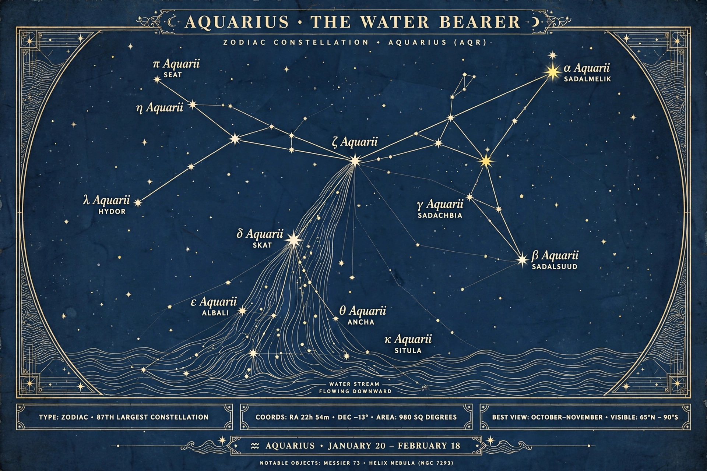

Age of Aquarius
From Wikipedia, the free encyclopedia

The constellation AquariusThe Age of Aquarius is an astrological age — a period of roughly 2,150 years corresponding to the precession of the equinoxes moving the March equinox through the constellation Aquarius.
Astrology
In tropical astrology the ages are counted in reverse order of the zodiacal signs because of precession. The Age of Pisces is conventionally said to be giving way to the Age of Aquarius, though astrologers disagree widely on when the transition begins or has begun; proposed dates range from the 19th to the 27th century. Aquarius is traditionally associated with innovation, egalitarianism and humanitarianism.
Culture
The idea entered popular culture through the 1967 musical Hair, whose opening song "Aquarius" proclaimed "this is the dawning of the Age of Aquarius." The concept became emblematic of 1960s counterculture, the New Age movement, and expectations of a coming era of peace and enlightenment.
Scientific view
Astronomers recognise precession as a real phenomenon but assign no significance to astrological ages, which are considered part of pseudoscience by the scientific community.